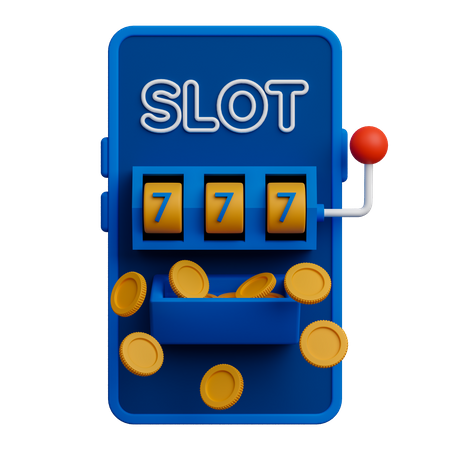

Crypto Lottery
In an era marked by technological marvels, the convergence of tech coins, blockchain,
and crypto lotteries has opened new avenues for community development planning.
This essay delves into the synergy of these innovative concepts and explores how they
can contribute to fostering accomplished planning and sustainable community growth.
Tech Coins and Blockchain: Tech coins, commonly referred to as cryptocurrencies, are
digital assets that employ cryptographic techniques to secure transactions and control
the creation of new units. Blockchain, the foundational technology behind most tech
coins, is a decentralized and tamper-resistant digital ledger that records transactions
across a network of computers. This combination of tech coins and blockchain has
disrupted traditional financial systems, offering faster, more secure, and borderless
transactions.
The rise of tech coins has given birth to various blockchain-based applications beyond
traditional financial transactions. These include decentralized applications (DApps) that
enable programmable and automated interactions, facilitating everything from supply
chain management to digital identity verification.
Crypto Lotteries and Community Development: Crypto lotteries introduce a novel
concept to traditional lottery systems by integrating blockchain technology and
cryptocurrency rewards. These lotteries operate on transparent and tamper-proof
blockchains, ensuring fairness and eliminating the need for intermediaries. Participants
purchase lottery tickets using cryptocurrencies, and the winning numbers are
determined using cryptographic algorithms, guaranteeing randomness.
Crypto lotteries offer more than just entertainment; they can be harnessed as tools for
community development planning. By earmarking a portion of the proceeds from ticket
sales for community projects, such as education initiatives, healthcare facilities, or
infrastructure improvements, crypto lotteries can generate funds and channel them into
meaningful endeavors that uplift the community.
Accomplished Planning through Tech Coins, Blockchain, and Crypto Lotteries: The
amalgamation of tech coins, blockchain, and crypto lotteries presents a unique
opportunity for accomplished planning within communities:
1. Innovative Funding Mechanisms: Traditional funding models for community
development often rely on government allocations, donations, or loans. Tech coins and
crypto lotteries offer an innovative way to generate funds without depending solely on
external sources.
2. Transparency and Accountability: The use of blockchain technology in crypto lotteries
ensures transparent and tamper-proof records of transactions and fund allocation. This
transparency fosters accountability and builds trust within the community.
3. Empowerment and Participation: Tech coins and crypto lotteries provide individuals
with a direct stake in community development. Participation in lotteries not only offers
the chance to win rewards but also contributes to the betterment of the community.
4. Decentralized Decision-Making: Blockchain-based systems can facilitate decentralized
decision-making processes. Community members could participate in voting
mechanisms to decide on the allocation of funds and prioritize projects.
5. Efficiency and Flexibility: Smart contracts on blockchain can automate the distribution
of funds to community projects based on predefined conditions. This streamlines the
process, reduces administrative overhead, and ensures efficient resource utilization.